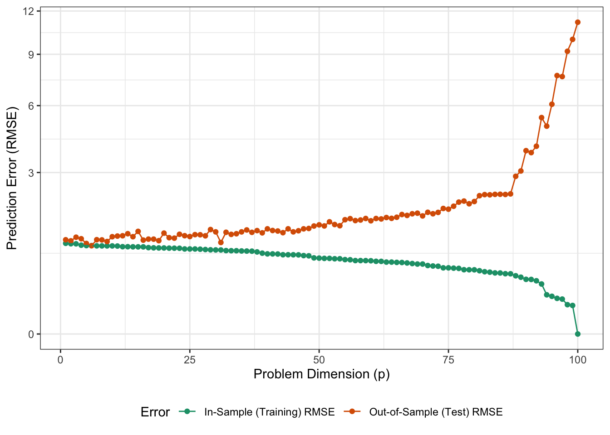
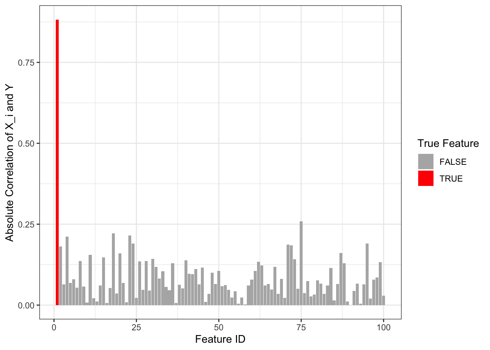
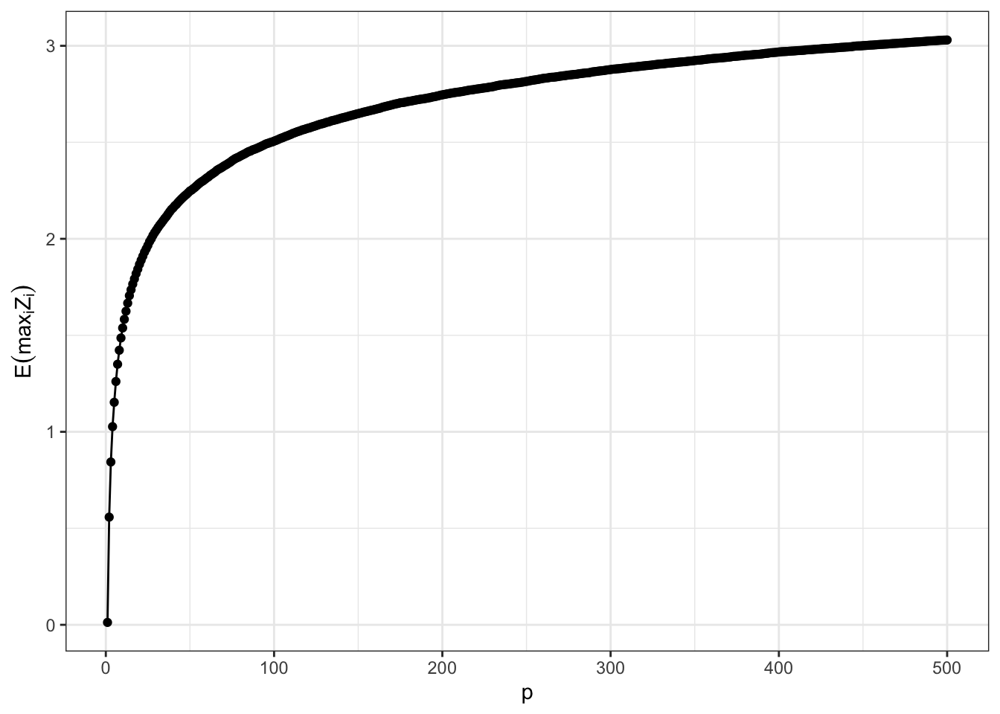

So we have started to build out a pretty comprehensive set of ML tools:
Empirical Risk Minimization as our strategy for picking a model (from a set of candidates)
Hold-out methods, especially cross-validation, for estimating how that model will perform when applied to new (test) data
First-order methods (gradient descent and friends) for solving the ERM problem by repeatedly improving from an original guess in a direction dictated by the gradient
Throughout all of these, we have faced a series of ‘goldilocks’ problems:
How do we choose the model class (set of candidates) for ERM? We want something big enough to reasonably capture the underlying phenomenon but not too big that it becomes superstitious (overfits)?
How do we use balance our needs to use our data for both model fitting and model evaluation?
When performing hold-out model evaluation, how do we balance computational efficiency (few times re-fitting the model) and statistical efficiency (getting the tighest possible approximation to model performance, as in LOO)?
When implementing gradient descent steps, how do we balance between taking a large step size to solve quickly with a small step size to solve robustly?
When using mini-batches to get stochastic (approximate) gradients, how do we balance computational efficiency with getting decent estimates of the gradient?
All of these challenges are fundamentally engineering challenges, requiring us to balance our computational ($$) and statistical / performance goals, with no free lunch. The closest thing we have to a free lunch is ‘more data’–which allows us to tame variance, use a broader model class and lower bias, and have more data to evaluate our model–but even that comes with higher computational costs.
Today, in our final discussion of ML Principles, we’re going to think about not just “big” data, but what aspects of “bigness” matter most and what they tell us about the problems modern ML wrestles with.
The Shape of Data
Recall that our primary focus in this course is on tabular data: that is, data that can be arranged (eventually) in a matrix format like:
Here, we say that the data (\(\bX\)) is a matrix with \(n\) rows and \(p\) columns. In each cell of this rectangular array, we have a single (real) number-possibly after running some sort of initial encoding step-and so we write \(\bX \in \R^{n \times p}\). (Note here that capital bold letters are matrices.)
In this arrangement, each row (\(i=1, \dots, n\)) corresponds to an observation or sample and each column (\(j=1, \dots, p\)) corresponds to a feature or covariate. Classically, in statistics, we tend to care about the case where \(n \to \infty\): do we have a model that gets the right answer if we have essentially infinite data (and hopefully far before then)? This isn’t our real desideratum - infinite data is not realistic - but it forms a sort of baseline. If our procedure can’t get the right answer with infinite data, how can we hope to do well with finite data?
More recently, statisticians have recently started thinking about the case where \(p\) is very large: that is, where we start measuring many different features for each observation. This is ultimately a result of technological progress:
As digital cameras become fancier, we have many more pixels per image.
(Related) As medical imaging devices become more high-resolution, we have high-detailed images (or even videos!) that we want to use for diagnosis
As genetic sequencing becomes more efficient, we can get thousands of readings per patient
As consumer behavior tracking becomes more detailed, we have records of every single consumer made. (Think of how many items you pass in a grocery store or on Amazon.)
Increases in technology make it more cost effective to measure lots of features for the same observation and the marginal cost of an additional feature is falling far more quickly than the marginal cost of an additional observation. (The cost to enroll a new patient in a genetic study is far more than the marginal cost of collecting just a bit more saliva for more testing.)
Today, we’re going to focus on the strange things that happen when \(p\) becomes big - often even bigger than \(n\).
Tall and Wide
A brief aside on terminology: think about \(\bX\) from above. As \(n \to \infty\), \(\bX\) picks up more and more rows; while as \(p \to \infty\), \(\bX\) picks up more and more columns. Because of this, we say that a data set where \(n \gg p\) is tall and a data set where \(p \gg n\) is wide. There’s no ‘official’ boundary here; it’s more of a general description. (If \(n \approx p\), you might think of the data as square.) The quantity \(p / n\) is sometimes called an aspect ratio (think of the aspect ratio of a TV screen) and it gives us a quantitative measure of tall vs wide, but we won’t use that much.
Stepping back, each observation \(\bx_i = (x_{i1}, x_{i2}, \dots, x_{ip})\) can be thought of as a point in \(p\)-dimensional space. If we measure only one value, we can depict it on a number line; if we measure two, we need a Cartesian plane; if we measure three, we need a three-dimensional plot, etc. Because of this problems where \(p\) is large are often described as high-dimensional.
But how ‘large’ is ‘large’? It is often relative to the amount of data we have: with a trillion observations, a million features is not too many; but if we have only one hundred observations, a million features is going to overwhelm us. We typically say that a problem is high-dimensional if \(p \geq n\), but again, this isn’t a bright line.
Why is \(p \geq n\) the dividing line? Let’s think about what happens to our old friend OLS. In this simulation, I’m going to fix \(n = 100\) and let \(p\) vary from \(1\) to \(100\). I’m going to plot both the in-sample (training) and out-of-sample (test) error for a simple linear model where the underlying truth is \[Y = 2 * X_1 + \epsilon.\] That is, our first feature is meaningful and the other ones are all irrelevant noise:
library(tidyverse)n <-100X_full <-matrix(rnorm(n^2), n, n)Y <-2* X_full[,1] +rnorm(n)map(1:100, \(p){ X <- X_full[,1:p, drop=FALSE] m <-lm(Y ~ X +0)## In sample RMSE training_rmse <-sqrt(mean((Y -predict(m))^2))## Out of sample RMSE X_new <-matrix(rnorm(1e5* p), ncol=p) Y_new <-2* X_new[,1] +rnorm(n)# R is giving me grief about object dimensions, so# I'll just do the prediction manually Y_hat <- X_new %*%matrix(coef(m), ncol=1) test_rmse <-sqrt(mean((Y_new - Y_hat)^2))data.frame(p, training_rmse, test_rmse)}) |>list_rbind() |>pivot_longer(c(training_rmse, test_rmse), names_to="type", values_to="error") |>mutate(type=if_else(type=="training_rmse", "In-Sample (Training) RMSE", "Out-of-Sample (Test) RMSE")) |>ggplot(aes(x=p, y=error, color=type)) +geom_point() +geom_line() +theme_bw() +theme(legend.position="bottom") +scale_color_brewer(name="Error", type="qual", palette=2) +scale_y_sqrt() +ylab("Prediction Error (RMSE)") +xlab("Problem Dimension (p)")

Well this is interesting! Let’s take these both in turn:
Why does the out-of-sample (test) RMSE blow up as \(p\) grows? This is your classical statistical story of variance. As we have more features and a fixed data size, our ‘data per feature’ goes to zero and our variance becomes increasingly large.
The in-sample (training) RMSE has exactly the opposite effect. As \(p\) increases, we can fit our data ever better until we reach the minimal value at \(p=100\) of an in-sample RMSE of 0.
This latter result should be a bit more worrisome. Our model isn’t better in any way - in fact, as the test error shows, it’s much worse - and there’s no more signal for us to capture (all of the signal was in the first variable). Clearly, we have begun to massively overfit this data, but how? (Remember: overfitting if when we see improvements in in-sample performance that won’t generalize out of sample. A bit of overfitting is unavoidable, but things are bad here!)
Linear regression picks up on (conditional) correlation among features. There shouldn’t be correlation among the ‘noise’ features in \(\bX\) and \(\by\) but it seems that it is finding some. In fact, if we look at this numerically, we see:

Our ‘real’ feature definitely has some correlation with \(Y\) but so do many of our nonsense features. We know this isn’t a systematic feature of our data (and ideally as \(n\to\infty\) those correlations would go to zero), but we’ve been tricked!
So what happened here? Essentially, with large \(p\), we’re taking too many gambles. On average, each of these correlations should be zero, but with finite data, there will always be a bit of ‘wiggle’ and, by pure chance, some of those wiggles will be quite large.
Let’s look at another version of this ‘dumb luck’ problem. Suppose we have standard normal (mean zero, standard deviation 1) random variables and we want to look at their maximum. We know that \(\E[Z_i]\) for each \(i\), but what happens to \(\E[\max_i Z_i]\)?

So the maximum steadly grows away from zero. This should make intuitive sense: if you pick a bunch of people at random, one of them will be the tallest (and almost certainly taller than average) so the ‘tallest’ in a group will be taller than the group or population average. But, at the same time, this doesn’t grow too wildly. If we take a group of 10 people and a group of 20 people, we don’t expect the tallest of the 20 to be 2x taller than the group of 10, but just a hair.
This is the only thing that winds up saving us: there are challenges of high-dimensional data, but they don’t grow too rapidly and, with a bit more data, we can usually handle things.
(Formally: If you look at the plot above, you can actually see that this grows logarithmically, so the returns diminish quickly. Compare this to the \(1/\sqrt{n}\) value of data we know from statistics. \(\log(n)/\sqrt{n} \to 0\) as \(n\to \infty\) so more data wins in the end.)
Let’s now look at some places where this comes up.
Multiple Testing
Let’s start by thinking about that most fundamental statistical operation, the hypothesis test.
What does a hypothesis test (and its associated) \(p\)-value tell us? If the null is true, the result we saw happened with probability (no more than) \(p\).
This is a weird statement! (Hopefully, you already know this!) Firstly, it is only relevant in the ‘bad scenario’ (no signal to find); it gives us no direct guarantees about how reliable our answer actually is. And we use a sort of epistemic jujitsu to do actual science with this: if what we saw seems unlikely to happen when there is no signal, either we got unlucky or there was actual signal.1
But it gets even weirder if we think about doing multiple tests. Something that might only happen 1% or 5% of the time, correpsonding to a robust-sounding 95% confidence or 99% confidence finding, is all but guaranteed to happen if we try it 100 times. We can just see this mathematically, if something happens 5% of the time, we expect it to happen \(0.05n\) times on average if we repeat our test \(n\) times. At \(n = 20\), we expect at least one ‘unlikely’ outcome and at \(n = 100\), we expect the rare (5% probability) event to occur around 5 times.
Note that it’s not because our probabilities or \(p\)-values are wrong: it’s because they only tell us about a single experiment. And if we do lots of experiments, we’re going to get some false positives just because. (If you look under every rock, you will eventually find some gold.)
This has scary implications for science writ large. If every scientist does the right thing, and has only a 1% chance of a false positive, that’s fine in a world of 1 or 2 scientists. But if there are 10,000 scientists, there will be around 100 pieces of false positive (incorrect) science that make it through our statistical filters. At the same time, it’s big ask to tell scientists to hold back their finding, which look good, simply because someone somewhere else is also running an experiment.2
FDR
So what can we do? One big hammer is to raise our bar for ‘discovery’ quite significantly. If you do 100 tests and want 95% confidence on the whole project, you might set your new threshold to \(p < 0.05 / 100 = 0.0005\). This will keep false positives low, but at incredible cost. Getting small \(p\)-values is expensive (typically requiring quite a lot more data) and, as we develop newer and better technologies (bigger \(p\)), we don’t want to keep pushing our scientific bar farther and farther out of reach.
But maybe we’re being a bit too harsh. This type of ‘bulk correction’ (often called a Bonferroni correction) is what we require to say no false positive in the whole set (with such and such probability). Can we make do with a slightly less stringent filter?
Suppose, instead, we ask for not too many false positives. I.e., if I run \(p=1000\) experiments and (possibly) find \(100\) results, is it enough to say that no more than 10% of them (10) are false positives, leaving us with 90 real findings?
For many problems, especially ‘pilot studies’, this is good enough. We ask slightly less of statistics, but get many more (potential) discoveries as a result.
Formally, we describe this as a false discovery rate: of the things that pass some threshold (potential discoveries), we want no more than \(q\%\) of them
Stein’s Phenomenon
Partial Pooling
In 1977, Brad Efron and Carl Morris took a look at the problem of predicting how baseball players would do over the course of the 1970 season based on their performance at the beginning of the year. Their findings, published in a remarkably easy to read Scientific American article are quite astounding.
STAT 3106
STAT 3106
Syllabus
/./syllabus.html
Lecture Notes
/./notes.html
Problem Sets
/./problem_sets.html
Applied Final Exam
/./competition.html
Additional Resources and Course Policies
/./resources.html
Notes for Lecture #07: Unit I. ML Fundamentals: A Funny Thing Happened on the Way to the nth Dimension – Challenges of High-Dimensional Statistics – STAT 3106
Notes for Lecture #07: Unit I. ML Fundamentals: A Funny Thing Happened on the Way to the nth Dimension – Challenges of High-Dimensional Statistics – STAT 3106
Notes for Lecture #07: Unit I. ML Fundamentals: A Funny Thing Happened on the Way to the nth Dimension – Challenges of High-Dimensional Statistics – STAT 3106
STAT 3106
Basic Software Tools for Data Analysis
Basic Software Tools for Data Analysis
Basic Software Tools for Data Analysis
Ben Recht (UC Berkley) did a nice blog series on the philosophical coherence (or not) of this type of argument. As you’ll see, Prof. Recht is a bit down on the whole endeavor.↩︎
The actual state of science may not be quite so awful. After all, we hope that most scientists are looking at problems and testing hypotheses that might be true (as opposed to just randomly running garbage experiments), but most of the simplest and most obvious things have already been discovered and science is hard…↩︎